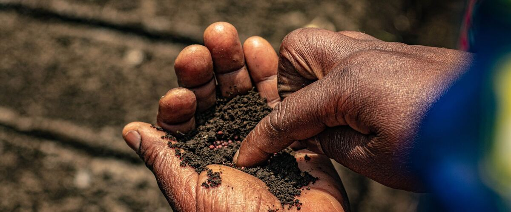

Beds, soil and water · Oregon · Washington · Idaho
Soil pH in the Northwest: Testing, Lime and When to Leave It Alone
Heavy rain makes many west-side soils acidic, while east-side soils lean the other way. Here's how to find out what you have and what to do about it.
Soil pH is a measure of how acidic or alkaline your soil is, on a scale from 0 to 14 where 7 is neutral. It matters because pH controls how easily plants can take up nutrients. A soil can be full of nutrients and still grow pale, slow plants if the pH is far off.
Why Northwest soils differ
West of the Cascades, decades of heavy winter rain wash calcium, magnesium and other basic minerals down through the soil. Over time that leaves many gardens on the acidic side. Soils in Portland, Seattle and the Willamette Valley often test below the range most vegetables prefer.
East of the Cascades, where rainfall is low, those minerals stay put. Soils there are more often neutral or alkaline, and adding lime would make things worse.
That's why the first step is always a test, not a bag of lime.
What plants want
- Most vegetables: slightly acidic to neutral, roughly pH 6.0 to 7.0.
- Blueberries: strongly acidic, roughly 4.5 to 5.5. Never lime a blueberry bed. See growing blueberries.
- Potatoes: grow fine in acidic soil, and potato scab, a disease that roughens the skins, is less of a problem at lower pH. Skip the lime where potatoes are going.
- Cabbage family: broccoli, cabbage and kale do best near neutral. Clubroot, a soil disease of this family, is more severe in acidic soil.
How to test
Home test kits and meters give a rough idea. A lab test is more accurate and also tells you which nutrients are low and how much lime, if any, to add for your soil. To take a sample, dig small amounts from 6 to 8 spots in the bed, about 6 inches deep, mix them in a clean bucket and send in a cup or so of the mix. Test each area you garden differently, for example the vegetable beds separately from the lawn.
Testing every three or four years is plenty for most home gardens.
Raising pH with lime
- Use the amount your test recommends. The right rate depends on your soil type and how far off it is, and too much is harder to fix than too little.
- Garden lime (calcium carbonate) is the usual choice. Dolomite lime also adds magnesium, so use it when the test shows magnesium is low.
- Apply in fall. Lime works slowly and takes months to change the pH. Spreading it in fall and mixing it into the top few inches gives it the winter to work before spring planting.
- Wood ash from a fireplace also raises pH and adds potassium, but it acts faster and is easy to overdo. Use it lightly, and not on blueberries or potatoes.
Lowering pH
To make soil more acidic, mainly for blueberries, gardeners use elemental sulfur, which soil bacteria slowly turn into acid over a season or more. Again, let a soil test guide the amount. Mixing in plenty of organic matter like compost helps buffer pH swings in either direction.